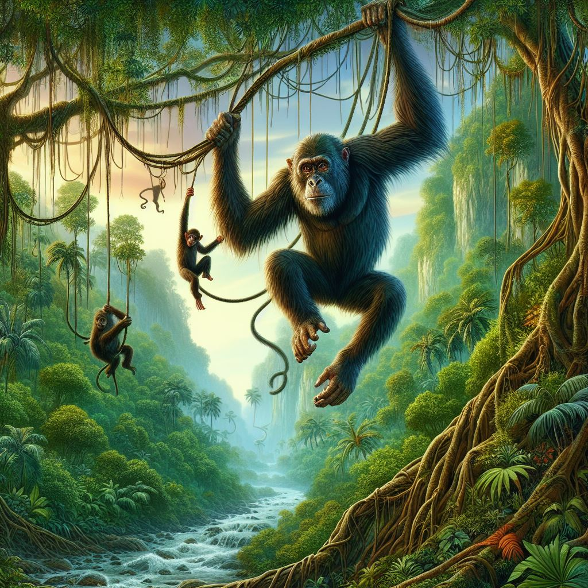

Otro camino.
A Te alejas del puente peligroso y buscas otra forma de cruzar el río.
Encuentras un grupo de monos que viven en los árboles.
Les ofreces una de tus frutas como regalo y ellos te aceptan como amigo.
Te enseñan a balancearte de liana en liana y te ayudan a cruzar el río.
Te diviertes mucho con los monos y aprendes sus costumbres. Al llegar al otro lado, te despiden con cariño y te invitan a volver cuando quieras.
Te sientes feliz de haber encontrado unos nuevos amigos, sin haber cruzado el puente.;
Parece haber un pantano adelante
AVANZAR
